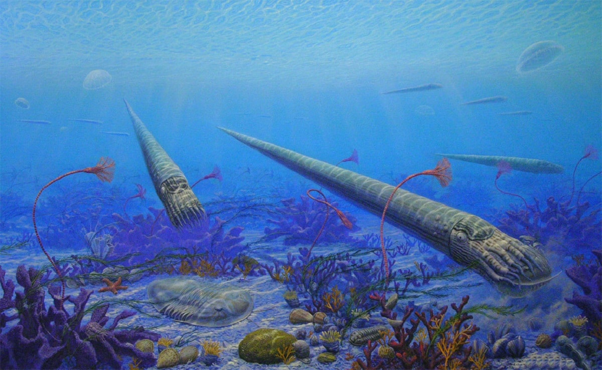

El Ordovícico es el segundo sistema y período del Paleozoico en la escala temporal geológica. Sucede al Cámbrico y antecede al Silúrico. Comenzó hace unos 487 millones de años y terminó hace unos 443 millones de años. Debe su nombre a la tribu celta de los ordovicos, que vivieron en el centro y norte de Gales, lugar donde el geólogo inglés Charles Lapworth identificó este sistema en 1879. Los invertebrados se diversifican en muchas formas nuevas (ej. cefalópodos de concha recta). Primeros corales, braquiópodos articulados (Orthida, Strophomenida, etc), bivalvos, nautiloideos, trilobites, ostrácodos, briozoos, muchos tipos de equinodermos (crinoides, cistoideos, estrellas de mar, etc.), graptolitos ramificados, y otros taxones todos comunes. Aparecen los conodontos (cordados planctónicos primitivos). Primeras plantas verdes y hongos en tierra. Glaciación al final del periodo. Abundan los fósiles, entre los que destacan los trilobites y en algunas regiones se formaron los yacimientos de petróleo y gas.
En este período, un día tenía 21 horas y no había animales en tierra firme por la escasez de oxígeno en la atmósfera.